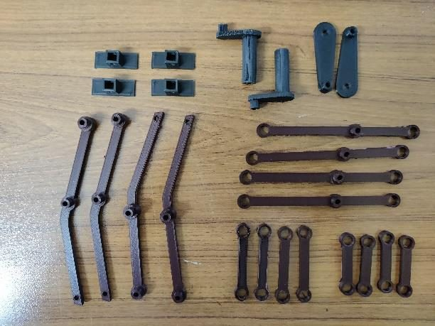
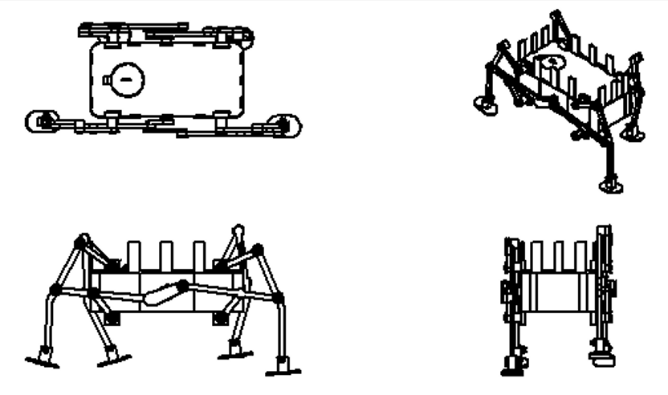
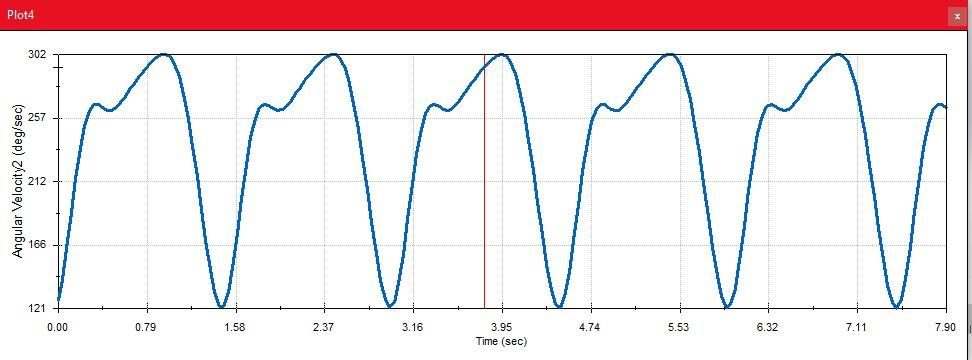
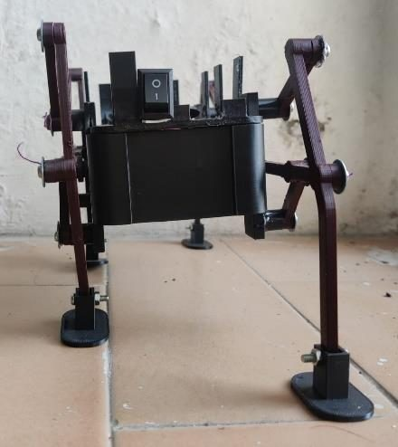

Klann Linkage Walking Robot
Summary
What
Walking robot driven by one motor through Klann linkage legs, with the linkage synthesised in Linkage software and simulated in a SolidWorks motion study.
Role
Synthesised a Klann linkage in Linkage software, simulated it in SolidWorks, 3D printed the parts in PLA and assembled a one-motor walking robot, in a team of 4.
Results
- Walks at 0.1 m/s on flat ground.
- Total build cost of Rs 2,400.
- Tended to topple over on carpet.

Problem
Build a mobile robot that walks on legs, driven by a single motor, able to carry a 60 to 70 g sphere-shaped weight (a design objective). The Klann linkage turns crank rotation into a stepping leg motion.
Method
- Chose the Klann linkage as the leg mechanism and found the output motion and link dimensions in Linkage software: first crank 18 mm, second crank 36 mm, first rocker arm 42 mm, second rocker arm 32.5 mm, connector 100.5 mm and leg 119.5 mm.
- SolidWorks CAD and a motion study for displacement, velocity and acceleration of the legs.
- Printed the parts in PLA. A 6 V DC dual-shaft motor and 9 V battery were chosen after force analysis, and placed to balance weight.
- Assembled with nuts, screws, washers and glue for a total cost of Rs 2400.




Results
The robot walks at 0.1 m/s on a flat surface, with consistent ground contact points and sufficiently smooth walking. Total expenditure was Rs 2400. On a high-friction surface such as carpet the robot tended to topple.


Validation
Observed on a flat surface, with the speed recorded as 0.1 m/s and no repeat trials.
Limitations
- Tested on flat ground only.
- The 60 to 70 g payload is a design objective, and no payload test is reported.
- PLA durability and wear were not evaluated. Sensors, tougher materials and damping are future work.
Figures


Tools
- SolidWorks
- Linkage
- PLA 3D printing